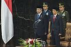

Galeri

SBY saat menjadi Menteri Pertambangan dan Energi, 1999
SBY saat menjadi Menteri Pertambangan dan Energi, 1999
SBY saat menjadi Menteri Pertambangan dan Energi, 1999
Foto Resmi Jenderal TNI Susilo Bambang Yudhoyono, 1999
Presiden Susilo Bambang Yudhoyono

Foto resmi kepresidenan Susilo Bambang Yudhoyono periode pertama, 2004.
Foto resmi kepresidenan Susilo Bambang Yudhoyono periode kedua, 2009
Foto resmi kepresidenan Susilo Bambang Yudhoyono dan Ibu Ani Yudhoyono.
Presiden Susilo Bambang Yudhoyono di sidang umum PBB (2007).
Presiden Susilo Bambang Yudhoyono saat mengunjungi Kerajaan Inggris (2012).
Presiden Susilo Bambang Yudhoyono di Senat Polandia (2013).

Pada pelantikan Presiden Joko Widodo, 2014